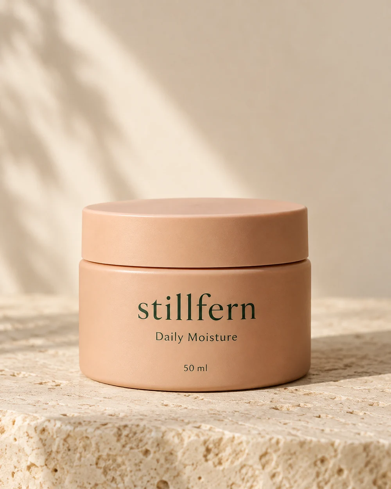
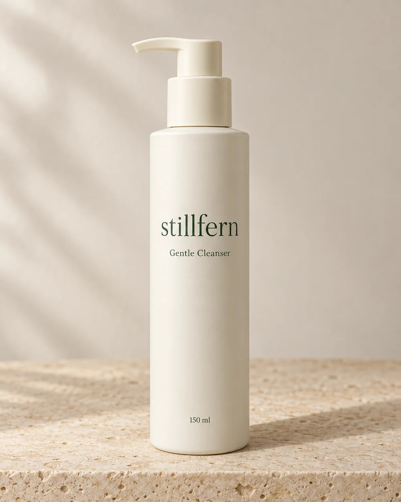
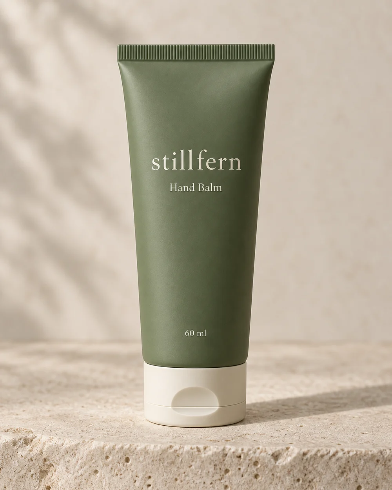

02 / Leave onDaily Moisture
£24.00A smooth, spreadable cream. 50 ml
Meet Daily Moisture
01 / Rinse · 150 ml
A soft, rinse-off gel.
The wash-off step. A pump bottle for the basin, with a light gel texture that rinses away with water.
Ivory pump bottle · Rinse-off gel
Illustrative GBP price. No actual products or orders. View demo bag.
Massage a small amount onto damp skin, then rinse with water. For external use; keep away from the eyes. This is an illustrative cosmetic direction, not personal skin advice.
Start with the format: this is a cleanser to rinse away, not a leave-on cream.
Complete illustrative list
Aqua, Glycerin, Cocamidopropyl Betaine, Decyl Glucoside, Coco-Glucoside, Glyceryl Oleate, Sodium Chloride, Citric Acid, Sodium Benzoate, Potassium Sorbate.
This fictional list is for the concept catalogue. It is not a validated formula, safety assessment or a real product label.
Understand the ingredient notes
02 / Leave onA smooth, spreadable cream. 50 ml
Meet Daily Moisture
03 / HandsA richer, slow-spreading cream. 60 ml
Meet Hand Balm